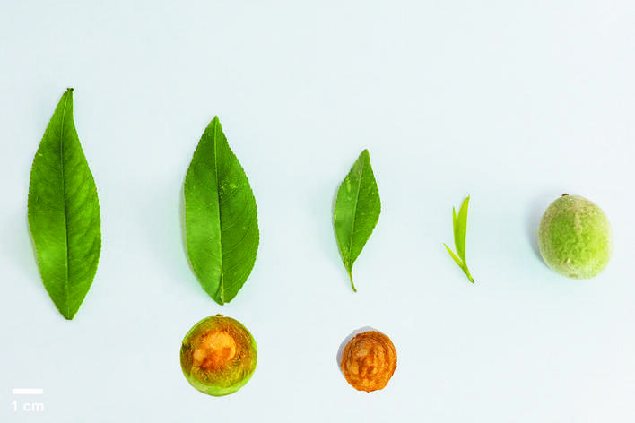

甘肃桃 Amygdalus kansuensis

形态特征
甘肃桃（学名：Amygdalus kansuensis），又名甘肃山桃、野桃，为蔷薇科桃属的落叶乔木或灌木，高3–7米。树皮灰褐色，枝条开展。冬芽无毛，为其与普通桃的关键区别特征。
叶片卵状披针形，长5–10厘米，宽1.5–3厘米，中下部最宽，先端渐尖，基部宽楔形，叶缘具稀疏细锯齿。叶柄长1–2厘米，无毛或近无毛。花单生，先叶开放，直径1.5–2.5厘米；花瓣粉红色，倒卵形；雄蕊多数；花柱长于雄蕊。
果实卵圆形或近球形，直径约2厘米，淡黄色，密被短柔毛，成熟时不开裂。果核近球形，表面有纵、横浅沟纹，但无孔穴，此亦为区别于普通桃的重要特征。
分布与生境
甘肃桃为中国特有植物，分布于陕西、甘肃、湖北、四川等省份。生于海拔1,000–2,300米的山坡、山谷疏林及灌丛中。在秦岭山脉呈现明显的垂直分布格局：1,000–1,500米与栓皮栎、油松混交；1,500–2,000米与锐齿槲栎、华山松为伴；2,000米以上进入云杉、冷杉林缘灌丛。
分类学
甘肃桃的分类学历史始于1925年，Skeels在《Proceedings of the Biological Society of Washington》第38卷87页正式发表该组合名。其基名为Rehder于1912年发表的Prunus kansuensis。俞德浚在1974年出版的《中国果树分类学》中系统整理了桃属分类，确立了甘肃桃的种级地位。《中国植物志》第38卷（1986年）收录了该物种的详细形态描述。
形态对比
| 性状 | 甘肃桃 | 普通桃 A. persica |
|---|---|---|
| 冬芽 | 无毛 | 有毛 |
| 叶片最宽处 | 中下部 | 中部 |
| 花柱 | 长于雄蕊 | 与雄蕊近等长 |
| 果实直径 | ~2 cm | 5–7 cm |
| 核面孔穴 | 无 | 有 |
生态与共生
甘肃桃根系可能与丛枝菌根真菌（AMF）形成共生关系。研究假设海拔升高导致环境胁迫增加，可能诱导AMF侵染率上升，进而通过诱导系统抗性（ISR）通路增强植株对根结线虫（Meloidogyne spp.）的抵抗能力。这一假说尚待实验验证。
生化成分
- 氰苷类（如苦杏仁苷）——植食者防御
- 酚酸类（绿原酸、咖啡酸）——抗菌、抗氧化
- 类黄酮（槲皮素、山奈酚）——UV保护、信号传导
- 根部分泌物——线虫趋避作用
遗传育种价值
甘肃桃与普通桃杂交亲和性高，是生产上常用的砧木材料。其三大核心育种价值为：（1）抗线虫基因资源；（2）耐寒性——可分布于海拔2,300米的高寒山区；（3）矮化性状——树高仅3–7米，可用于矮化砧木选育。
分子系统学
基于ITS序列的系统发育分析显示，甘肃桃在桃属中与普通桃亲缘关系最近，分化时间约在2.3–3.8百万年前（上新世晚期），与青藏高原隆升和第四纪冰期气候波动密切相关。
参考文献
- Skeels, H.C. 1925. Proceedings of the Biological Society of Washington 38: 87.
- 俞德浚. 1974. 《中国果树分类学》. 农业出版社.
- 中国科学院中国植物志编辑委员会. 1986. 《中国植物志》第38卷: 23页. 科学出版社.
- Verde, I. et al. 2012. The peach genome. Nature Genetics 45: 487–494.